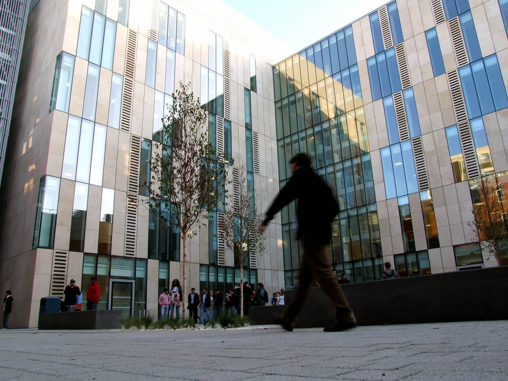

I studied at Kingston University and have Bsc in Game Design, you're probably thinking "why not go into game design?" The short answer is that I had trouble learning the coding languages C++ and C# and couldn't grasp until my year but by then I had enough(Insert tears). I probably could have switched courses but at that point in time I was sure that this is what I wanted to do and I had to finish it. But whilst being at University I discovered other things that interested me, some even more than game design. One of the modules I chose to take during my final year was User Experience and I aced it. The module was essientally looking at applications you use and criticing them and then redesign the application you chose to critique because we all have that moment of I wish this worked like that instead. Whilst redesigning the application I discovered that although it was nearly as tedious as coding I loved every moment of it. I even decided to continue this after I graduated using Adobe XD and photoshop to see if I could redesign an application to give it a professional feel. 
Another thing I discovered is Twitch.tv a platform were people live streamed games that they were playing and also were gaming announcements were made. Now during this time there was a game called "Destiny" by bungie which allowed me to makle some great friends some that live in the Uk and some in the USA. Now why am I doing this at uni? because my schedule was terrible i'd have a 9am lecture for 2 hours and then another at 2 in the afternoon and as this was during my first year I didn't really know where to start when it came to learning coding besides the lectures. This did however intrdouce to online technologies as I had I thought YouTube was the only platform that offered that service. Then I decided to try streaming and uploading clips to YouTube so I could experience what that was like because I just have to know how things work.
At Uni there was also a business module which was compulsory we had to take it and there was group work. This is when I met some people at Uni that I would hang out with over the years or at least until I graduated. During the workshop for business one of my new friends was reading the manga for "Naruto Shippuden". At this point I knew it was an anime but I hadn't been keeping up with it all but I figured I have the messed up uni schedule now is the time to get into anime and that became a ritual of ours every thursday to read the latest chapter of Naruto took us less than 2 minutes to read just before the workshop began. It's a fond memory I have of uni.